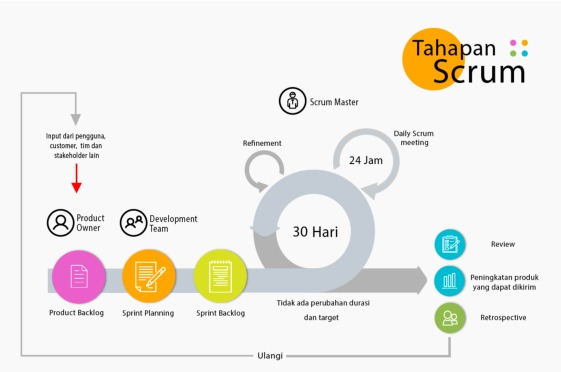
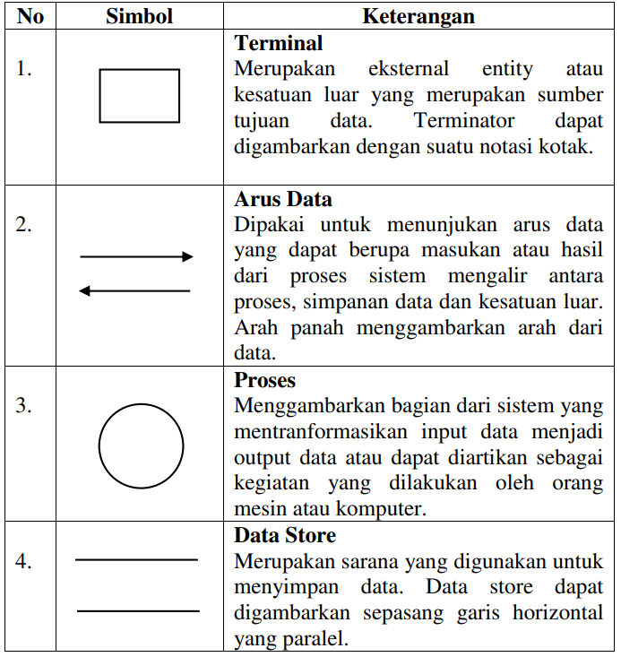
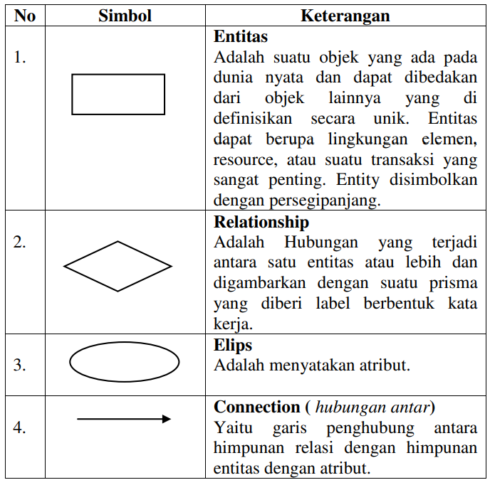

PENERPAN METODE SCRUM PADA SISTEM INFORMASI SEKOLAH MENENGAH PERTAMA PANCASILA

5200411476 Risky Devandra Hartana
5200411477 Robi Ardiansyah
5200411478 Cipta Andika Putra Pratama
5200411479 Cornellius Agova Madu Putera
5200411480 Faris Yudhika Ardana
PROGRAM STUDI INFORMATIKA
FAKULTAS SAINS & TEKNOLOGI
UNIVERSITAS TEKNOLOGI YOGYAKARTA
2020/2021
BAB I
Pendahuluan
1.1 Latar Belakang Masalah
Pada saat ini perkembangan teknologi informasi dan komunikasi (TIK), khususnya teknologi komputer sudah sangat mempengaruhi berbagai bidang kehidupan, baik dibidang ekonomi, sosial, budaya, maupun pendidikan. Salah satu produk teknologi yang popular adalah teknologi website.Teknologi internet dapat memudahkan untuk mengakses data dan mencari berita maupun informasi secara online. Pemanfaatan teknologi informasi berbasis website tidak hanya dimanfaatkan oleh perusahaan ataupun pemerintahan. Namun sudah mulai menjadi kebutuhan mendasar dalam pemanfaatan media informasi online berbasis website ini dimanfaatkan di dunia pendidikan. Hal ini dapat dilihat dari hampir sekolah tingkat menengah pertama maupun atas sudah mempunyai website. Karena sangat memudahkan para calon peserta didik baru untuk mencari informasi dan melakukan pendaftaran secara online.
SMP Pancasila terletak di wilayah Kecamatan Banguntapan, Kabupaten Bantul, Daerah Istimewa Yogyakarta. SMP Pancasila setiap melakukan penerimaan peserta didik baru selalu menerima banyak sekali siswa bahkan hampir satu daerah berminat ke sekolah ini. SMP Pancasila, saat ini adalah sekolah yang membuka kelas sebanyak 18 kelas, dan 800 siswa per tahun. Namun, pelayanan yang digunakan masih menggunakan pelayanan dengan manual sehingga waktu yang digunakan lebih lama dan tidak efisien dan pendataan akan berpeluang terjadi kekeliruan.
Berdasarkan permasalahan tersebut maka dibuatlah sistem informasi berbasis web yang digunakan untuk penerimaan siswa baru di SMP Pancasila dengan tujuan agar pendataan data dan penerimaan calon siswa baru lebih efektif dan efisien. Sehingga sedikit kemungkinan kekeliruan saat melakukan pendataan pada saat penerimaan peserta didik baru di setiap tahunya.Sistem ini akan mengolah data calon siswa , data admin dan data transaksi dengan menggunakan MySQL. Sistem ini dibangun dengan menggunakan Bahasa pemrograman PHP, HTML, JavaScript, dan CSS.
1.2 Rumusan Masalah
Berdasarkan latar belakang tersebut, dapat dirumuskan masalah sebagai berikut “ Bagaimana membuat suatu sistem website yang dapat digunakan untuk memudahkan calon siswa baru dan para orang tua dapat dengan mudah mendaftarkan calon siswa ke sekolah dan dapat memantau perkebangan dari siswa”.
1.3 Batasan Masalah
Adapun ruang lingkup permasalahan yang akan dibahas dalam penulisan ini, yaitu:
- Pengembangan sistem informasi pendaftaran online berbasis website.
- Penulisan ini membahas sistem informasi pendaftaran online berbasis website yang mencakup registrasi, penjadwalan seleksi dan laporan dari penerimaan siswa baru
- Hasil dari analisis dan perancangan adalah pengembangan aplikasi berbasis web.
1.3 Tujuan Penelitian
Menghasilkan sistem informasi pendaftaran sekolah berbasis website.
1.4 Manfaat Penelitian
- Meningkatkan efisiensi dan efektifitas pengelolaan data pada sekolah.
- Calon siswa lebih mudah memahami untuk melakukan pedaftaran karena dilakukan secara online.
- Sekolah juga dapat lebih mendata calon siswa dan siswa yang ada di sekolah.
BAB II
Landasan Teori
2.1 Metode Scrum
Menurut Adi & Permana (2015) dalam penelitiannya yang berjudul “Scrum Method Implementation in a Software Development Project Management” menyatakan bahwa Scrum pertama kali dikembangkan oleh Jeff Sutherland pada tahun 1993 dan tujuannya adalah menjadi metodologi pengembangan yang mengikuti prinsip-prinsip metodologi Agile. Scrum adalah kerangka kerja responsif tambahan dari pengembangan perangkat lunak untuk proyek perangkat lunak dan mengelola produk atau pengembangan aplikasi. Fokusnya adalah pada "strategi, pengembangan produk holistik yang fleksibel di mana tim pengembang bekerja sebagai unit untuk mencapai tujuan bersama" sebagai rival dari "pendekatan tradisional, urutan". Scrum memiliki beberapa proses yang kompleks dimana terdapat banyak faktor yang bisa mempengaruhi hasil akhir pengembangan sistem.
Tahap-tahap dalam Scrum dibagi menjadi seperti berikut:
- Product Backlog
- Sprint Planning
- Sprint Backlog
Peneliti sistem akan mengumpulkan dan menyusun semua kebutuhan sistem dan permintaan pengguna terhadap sistem, misalnya fitur-fitur yang dibutuhkan oleh pengguna terhadap sistem. Setelah targetnya ditetapkan, semua kebutuhan dan permintaan akan dibagikan menjadi poin-poin kecil yang mana setiap poin tersebut mempunyai tingkat layak untuk dikembangkan
Sprint Planning merupakan sebuah langkah yang wajib dilaksanakan setiap saat akan memulainya sprint baru. Pada langkah tersebut peneliti akan menyusun pekerjaan pekerjaan apa saja yang harus diselesaikan dalam 1 sprint.
Sprint merupakan sebuah batas waktu yang mengandung pekerjaan pekerjaan kemudian sprint tersebut akan fokus terhadap delivery time dari hasil yang diambil dari Product Backlog.
Menurut Mahalakshmi & Sundararajan (2015), metodologi pengembangan scrum memiliki beberapa kelebihan yaitu sebagai berikut:
- Scrum memberikan kepuasan pelanggan dengan mengoptimalkan waktu penyelesaian dan responsif terhadap permintaan.
- Meningkatkan kualitas.
- Terima dan harapkan perubahan.
- Memberikan perkiraan yang lebih baik sambil menghabiskan lebih sedikit waktu untuk tahap pengembangan.
- Lebih mengontrol jadwal proyek.
- Scrum sangat ideal untuk mengubah, mengakumulasi dengan cepat pada permintaan.
- Banyak manfaat bagi pelanggan dan manajer proyek.
2.2 Sistem
Menurut I Putu Agus Eka Pratama (2014:7 ) Sistem didefinisikan sebagai sekumpulan prosedur yang saling berkaitan dan saling terhubung untuk melakukan suatu tugas bersama - sama. Secara garis besar, sistem informasi terdiri atas tiga komponen utama. Ketiga komponen tersebut mencakup software, hardware, dan brainware. Ketiga komponen ini berkaitan satu sama lain. Software mencakup semua perangkat lunak yang dibangun dengan bahasa pemrograman tertentu, pustaka, untuk kemudian menjadi sistem operasi, aplikasi, dan driver. Sistem operasi, aplikasi, driver, saling bekerja sama agar komputer dapat berjalan dengan baik. Hardware mencakup semua perangkat keras (motherboard, processor, VGA, dan lainnya) yang disatukan menjadi sebuah komputer. Dalam konteks yang luas, bukan hanya sebuah komputer, namun sebuah jaringan komputer. Brainware mencakup kemampuan otak manusia, yang mencakup ide, pemikiran, analisis di dalam menciptakan dan menggabungkan hardware dan software. Penggabungan software dan hardware dengan bantuan brainware inilah (melalui sejumlah prosedur) yang dapat menciptakan sebuah sistem yang bermanfaat bagi pengguna.
Menurut Yakub (2012:1) sistem adalah sekelompok elemen – elemen yang terintegrasi dengan tujuan yang sama untuk mencapai suatu tujuan. Terdiri dari sejumlah sumber daya manusia, material, uang dan informasi. Sumber dayatersebut bekerjasama menuju tercapainya suatu tujuan tertentu yang ditentukan oleh pemilik atau manjemen.
Pengertian sistem menurut Marliana B. Winanti,S.Si.,M.Si dalam bukunya sistem informasi manajemen (2014: 4 ) Sistem adalah seperangkat komponen yang saling berhubungan dan saling berkerjasama untuk mencapai beberapa tujuan.Sedangkan pengertian sistem menurut Tata Sutabri dalam bukunya konsep sistem informasi (2011: 4 ) adalah Sekelompok unsur yang erat hubungannya satu dengan yang lainnya, yang berfungsi bersama-sama untuk mencapai tujuan tertentu .
2.3 Informasi
Menurut I Putu Agus Eka Pratama (2014:7), informasi merupakan hasil pengolahan data dari satu atau berbagai sumber, yang kemudian diolah, sehingga memberikan nilai, arti, dan manfaat. Proses pengolahan ini memerlukan teknologi.Pada proses pengolahan data, untuk dapat menghasilkan informasi, juga dilakukan proses verifikasi secara akurat, spesifik, dan tepat waktu. Hal ini penting agar informasi dapat memberikan nilai dan pemahaman kepada pengguna. Pengguna dalam hal ini mencakup pembaca, pendengar, penonton, bergantung pada bagaimana cara pengguna tersebut menikmati sajian informasi dan melalui media apa informasi tersebut disajikan.
Menurut Tata Sutabri (2012:29) informasi adalah sebuah istilah yang tepat dalam pemakaian umum. Informasi dapat mengenai data mentah, data tersusun, kapasitas sebuah saluran komunikasi, dan lain sebagainya. Sumber informasi adalah data. Data merupakan kenyataan yang menggambarkan suatu kejadian serta merupakan suatu bentuk yang masih mentah yang belum dapat bercerita banyak sehingga perlu diolah lebih lanjut melalui suatu model untuk menghasilkan informasi.
Informasi adalah data yang diolah menjadi bentuk lebih berguna dan lebih berarti bagi yang menerimanya atau data yang diproses sedemikian rupa sehingga Meningkatkan pengetahuan seseorang yang menggunakan. Sistem apapun tanpa ada informasi tidak akan berguna, karena sistem tersebut akan mengalami kemacetan dan akhirnya berhenti. Informasi dapat berupa data mentah, data tersusun, kapasitas sebuah saluran informasi dan sebagainya. (Yakub,2012:8).Pengertian informasi menurut Marliana B. Winanti,S.Si.,M.Si dalam bukunya sistem informasi manajemen (2014:14) Informasi adalah data yang telah diolah menjadi sebuah bentuk yang berarti bagi penerimanya dan bermanfaat dalam pengambilan keputusan saat ini atau saat mendatang.
2.13 Diagram Arus Data (DAD)
Diagram arus data adalah suatu bentuk model yang menggambarkan sistem sebagai suatu jaringan proses fungsional yang dihubungkan satu sama lain baik secara manual maupun komputer.
Adapun tingkat atau level DAD terdiri dari:
- Diagram Konteks
- Diagram Nol
- Diagram Rinci
Merupakan diagram yang ditingkatnya paling tinggi, yang terdiri dari suatu proses dan menggambarkan ruang lingkup sistem.
Merupakan diagram antara konteks dan diagram rinci yang menggambarkan proses utama dari DAD yang sedang dikembangkan.
Merupakan diagram paling bawah, yang merupakan penguraian dari proses yang ada pada diagram nol.
Adapun komponen-komponen DAD terdiri dari:
2.14 Diagram Hubungan Entitas (ERD)
Entity Relationship Diagram (ERD) adalah suatu model jaringan (network) yang menggunakan susunan data yang disimpan dari sistem secara baik atau merupakan konseptual yang mendeskripsikan hubungan antara data store (dalam DAD).
Komponen-komponen yang digunakan dalam merancang ERD adalah sebagai berikut:
BAB III
PEMBAHASAN
3.1 METODE PENELITIAN
Metode penelitian yang digunakan dalam penelitian ini adalah metode pengembangan DevOps yang memiliki proses seperti dibawah ini:
- Plan
website ini dibuat dengan tujuan untuk memudahkan pendaftaran yang dulu masih menggunakan metode manual akan lebih efektif dan efisien ketika menggunakan sistem infomasi berupa websit - Code
teks editor yang digunakan pada kasus ini menggunakan sumblime teks atau VSC (visual studio code).bahasa pemrograman yang kami gunakan dalam kasus ini adalah PHP, HTML, JavaScript, dan CSS. - Build
Setelah tim developer selesai menulis kode yang dibutuhkan, mereka akan memasukan kode tersebut ke dalam shared code repository. - Test
Langkah selanjutnya adalah melakukan pengujian.Pengujian dilakukan dengan cara melakukan runing program. Jika ada masalah yang ditemukan pada fase ini, maka masalah tersebut akan dikirim kembali ke tim developer untuk diselesaikan. - Release
Pada tahapan ini,semua peruhan baik desain UI dan pengkodean telah dilakukan pengecekan final sehingga tidak ada kerusakan dan missing proses yang terjadi. - Deploy
Setelah production environment dibuat dan dikonfigurasi maka versi terakhir dari pengembangan yang telah dilakukan akan diterapkan - Operate
Operasi dalam siklus DevOps berkaitan dengan konfigurasi dan pengelolaan aplikasi perangkat lunak setelah penerapan - Monitor
Pada tahap terakhir ini , tim IT operations akan terus bekerja keras untuk memantau infrastruktur , sistem , dan aplikasi.
3.2 Perancangan Sistem
Pada perancangan, menggunakan diagram kontek, DFD, ERD, dan perancangan database. Dimana tujuan dari diagram kontek adalah mengetahui keadaan sistem yang akan dibangun. Gambar 1 adalah diagram kontek untuk sistem yang dibuat.

Gambar 1. Diagram kontek
Berdasarkan Gambar 1, maka akan dipecah menjadi data flow diagram (DFD) di Gambar 2. DFD adalah suatu model logika data atau proses yang dibuat lebih mendetail dibanding diagram konteks yang diperbolehkan, bisa dicapai dengan mengembangkan diagram. Sisa diagram asli dikembangkan ke dalam gambaran yang lebih terperinci yang melibatkan tiga sampai Sembilan proses dan menunjukkan penyimpanan data dan aliran data baru pada level yang lebih rendah.

Gambar 2. DFD level 0
DFD level 0 merupakan pengembangan dari diagram konteks, DFD level 1 merupakan pengembangan dari DFD level 0. Tiap proses dari DFD dapat dikembangkan lagi menjadi lebih detail sampai proses-proses tersebut tidak dapat dikembangkan lagi

Gambar 3. DFD level 1

Gambar 4. DFD level 2

Gambar 5. DFD level 3
Entity Relationship Diagram (ERD) adalah diagram yang dapat mengambarkan relasi antar entitas yang digunakan dalam pembuatan sistem.

ERD
3.3 Design Database

Gambar 6 Tabel Admin

Gambar 7 Tabel Calon Siswa

Gambar 8 Tabel Formulir

Gambar 9 Tabel Pembayaran

Gambar 10 Tabel Transaksi
3.4 Relasi Tabel

Gambar 11 Relasi Tabel
3.5 Rancangan Desain UI
A. Rancangan tampilan desain UI Halaman Login

Gambar 12 Halaman Utama
B. Rancangan tampilan desain UI halaman Home

Gambar 12 Halaman Utama
C. Rancangan tampilan desain UI halaman Daftar

Gambar 13 Halaman Daftar